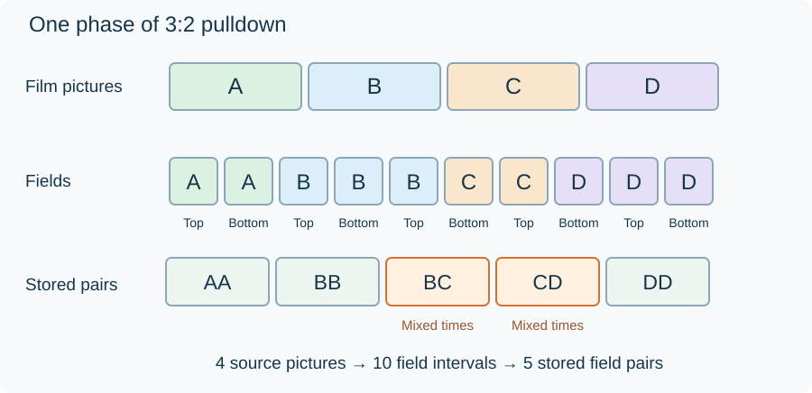

Telecine and 3:2 Pulldown
3:2 pulldown distributes film pictures over alternating two-field and three-field intervals for television presentation.
Film and television can require different presentation schedules. Four pictures at 24 fps span 1/6 second. A 60-field/s television schedule has ten field intervals in that same time. Ten cannot be divided evenly between four film pictures.
3:2 pulldown solves the scheduling problem by holding successive pictures for alternating three and two field intervals. Starting at a two-field phase, one cycle is:
A A B B B C C D D D.
The extra field intervals repeat parts of existing film pictures. They do not contain newly photographed moments.

Original cycle starting at the two-field phase. A different starting phase shifts the pattern.
How ten fields form five television frames
Top and bottom field parity alternate even while the source picture is repeated:
| Field interval | Parity | Source picture |
|---|---|---|
| 0 | Top | A |
| 1 | Bottom | A |
| 2 | Top | B |
| 3 | Bottom | B |
| 4 | Top | B |
| 5 | Bottom | C |
| 6 | Top | C |
| 7 | Bottom | D |
| 8 | Top | D |
| 9 | Bottom | D |
Pair neighboring fields into five television frames and the sequence becomes:
AA, BB, BC, CD, DD.
AA, BB, and DD combine rows from one film picture. BC and CD combine rows from different pictures. A moving object can therefore show combing in two pairs even though the original film frames were progressive.
This pattern is useful when inspecting older film transfers in an Emby library. The stored interlaced-looking pairs can be evidence of a film-to-television cadence rather than native interlaced camera capture.
The fractional version fits exactly too
Common film transfers use 24000/1001 pictures/s and 60000/1001 fields/s. Their ratio is still 2.5 fields per film picture.
Four source picture durations:
4 × 1001/24000 = 0.166833… seconds.
Ten field durations:
10 × 1001/60000 = 0.166833… seconds.
The whole cycle retains its duration. Within the cycle, however, a two-field hold lasts 33.3667 ms and a three-field hold 50.05 ms, instead of the film's uniform 41.7083 ms picture spacing. A steady pan is presented with unequal holds, which is the source of pulldown judder.
Store the repetitions, or describe them
In hard telecine, the stored picture/field sequence already contains the repetitions and mixed pairs. Recovering the film sequence requires identifying which row sets belong together and which presentations are redundant.
In soft telecine, a format can retain the underlying coded film pictures and signal field repeats for presentation. The display schedule has more intervals than the coded picture count. Different inspection stages can consequently report the coded-picture rate or the intended repeated-field presentation.
Modern playback can sometimes use the underlying film sequence directly with a suitable progressive display cadence. The old television scheduling problem and the display's current refresh schedule are separate stages.
Inverse telecine reverses a recoverable film cadence. In the illustrated hard-telecine cycle, it must join B's or C's matching rows across pair boundaries before removing redundancy. Simply throwing away one of the five existing pairs would leave BC or CD incomplete as film pictures.